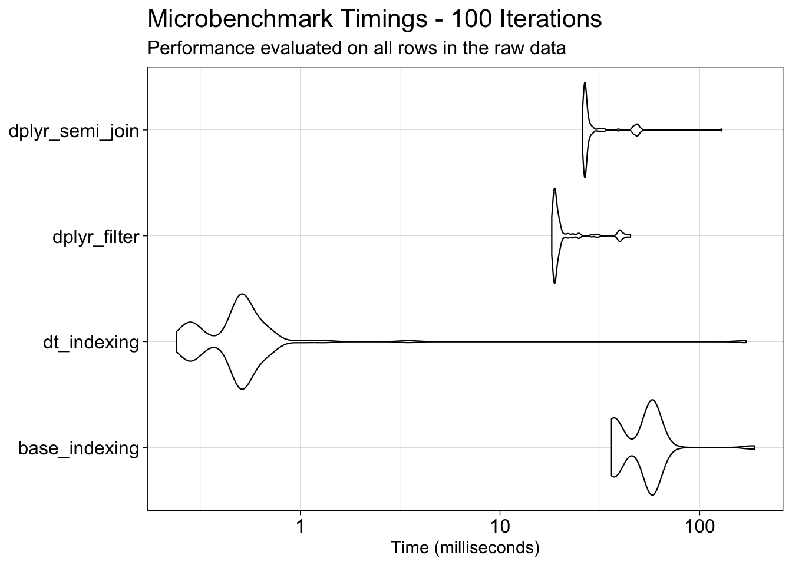
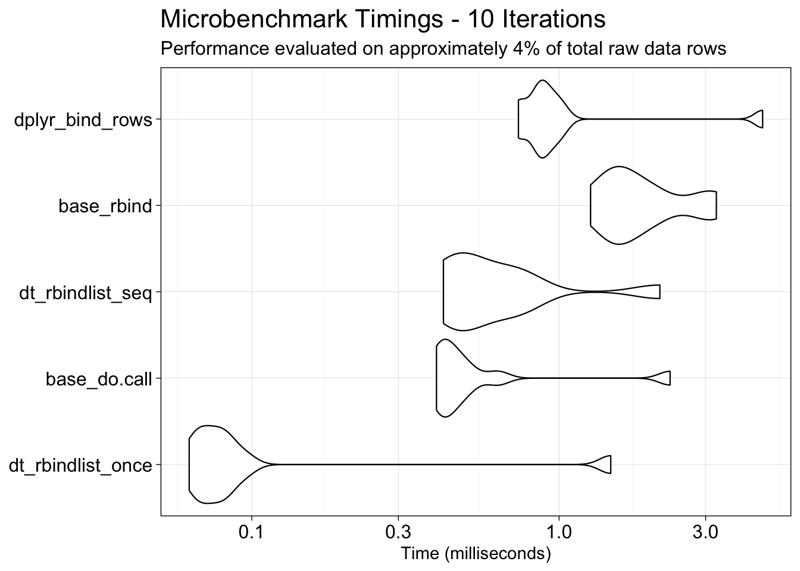

The ultimate goal of this project is to produce a reasonably cleaned, concise, and validated form of the raw data suitable for dynamic visualization to the census tract level across three decennial periods. As noted in the Review section, inconsistencies between addresses arise from typographical errors. A substantial portion of the various errors detected were among entries that utilized a PO Box at some point during the filing period.
Without further information from the data distributor, the level of accuracy that can be assumed for the geolocation associated with each address cannot be guaranteed. It is therefore advisable to validate all unique addresses, with particular attention to PO Box entries, which are known to have incorrect geolocations associated with them.
The geolocation associated with each PO Box will be used to estimate the physical address, representing the location of community impact, associated with those years of filing. If a PO Box is not reasonably near any listed physical address, it will be treated as the closest approximation to the actual business location. If it is near multiple physical addresses that are in close proximity to one another, it will be associated with the nearest listed physical address.
The data cleaning and validation goals are to:
Reduce redundancy by consolidating separately listed addresses that result from typographical errors into a single entry.
Validate addresses where possible and annotate the dataset with the resulting confidence/accuracy level.
Validate each record’s associated geolocation where possible and annotate the dataset with the resulting confidence/accuracy level.
Use available geolocations to assign each record to its corresponding census tract and county for the 2000, 2010, and 2020 decennial years.
Analysis Outline
To achieve this, the following stepwise procedure is outlined.
Step #1: Consolidate similar addresses by applying stringdist() to build a graph of connected components based on string similarity, then use Depth-First Search (DFS) to aggregate nearest-neighbor address variants. From each resulting cluster, randomly select one representative address to carry forward. For addresses that failed the longitude/latitude similarity check, retain only the distinct address versions associated with a given business.
Step #2: Validate each address against a reliable reference database, such as the USPS Address 3.0 API, and retain whichever variant is confirmed as valid, or substitute it with the standardized suggestion returned by the database.
Step #3: Validate the longitude and latitude associated with an address using the US Census Bureau’s Geocoder API.
Step #4: Associate a PO Box with a physical addresses and identify moves based on longitude/latitude nearness.
Step #5: Using the street address (and for PO Boxes, the associated street address defined in the previous step) add the census tract and county for the 2000, 2010, and 2020 decennial years also using the US Census Bureau’s Geocoder API. This will improve accuracy when calculating metrics over different decennial years and mitigate map projection mismatching.
CautionValidation Sources
In addition to the resources referenced above, the following candidate databases were considered for validating the listed physical addresses and geolocations:
Environmental Systems Research Institute, Inc. (Esri) StreetMap Premium and the local version available to Yale affiliates
Google Maps API
These sources were ultimately not used due to a combination of limiting factors. Under the applicable Data Use Agreements (DUAs), it was necessary to confirm that no API usage would violate the terms of those agreements. The USPS and U.S. Census Bureau APIs were approved following coordination with the relevant security review processes; however, accessing the Esri online database or Google Maps API required additional review.
The review process was initiated for the Google Maps API given its anticipated capacity to efficiently validate addresses and geolocation. However, the review extended beyond the project timeline, rendering those resources inaccessible. Additionally, Esri requires manual adjudication of alternative address suggestions, which would have been prohibitively time-intensive. Researchers from the Yale Center for Geospatial Solutions (YCGS) further noted that the online Esri resource is more current and robust than its locally hosted counterpart, suggesting that the local version would offer little advantage over the USPS Address 3.0 database in terms of address validation quality.
Code Optimization
Selected code excerpts are provided below. The complete code used to generate this report can be found in Code/Clean Raw Data_Step 1.R.
During the initial development of this process, from late July through the first prototype unveiling on June 18th, 2025, priority was placed on rapidly processing the raw data and establishing a viable workflow, rather than on optimization. As a result, many steps were slow to execute, and only a portion of the data could be fully processed in time for the prototype presentation.
Following the symposium, it was determined that running the pipeline on Yale’s High Performance Computing (HPC) infrastructure could reduce processing time. Consultation with researchers at the Yale Center for Research Computing (YCRC) surfaced two critical considerations:
Script Efficiency: Processing scripts must be optimized prior to deployment. This is necessary both for the responsible use of shared computational resources and because the HPC is unlikely to compensate for inefficient code.
API Constraints: Workflow steps dependent on external API calls are bounded by those services’ rate limits and response latencies. These bottlenecks are not addressable through parallelization.
Functions with long local runtimes, even when parallelized with the future.apply package, were profiled using profvis, a tool for identifying where R spends the most time during execution. This analysis revealed two operations as primary contributors to inflation of the overall processing time: subsetting data and combining data by rows (row-binding).
To address these bottlenecks, three approaches were benchmarked: base R, the tidyverse, and data.table. Within each approach, specific strategies were also compared, for example, dplyr::filter() vs. dplyr::semi_join() for subsetting, and data.table::rbindlist() applied within a loop vs. after loop completion for row-binding.
Show the code
## ----------------------------------------------------------------## PART A: Enhancing Function Performance and Efficiency# Different methods were compared to enhance function speed and scalability, # identifying the most efficient approaches for both local computations and # high-performance computing (HPC) environments.## The `profvis` package was used to pinpoint code sections that consume the # most memory and execution time. The `profvis` function is commented out # around the optimized code sections.search_space <- duplicates_detected$abi## --------------------## SUBSECTION A1: Optimizing Data Subsetting# Convert the 'church_wide' data frame to a data.table for efficient data manipulationchurch_wide_dt <-as.data.table(church_wide)# Benchmark different methods of subsetting the data framemb <-microbenchmark(# Method 1: Using base R subsetting with %in%baseR = { subset_base <- church_wide[church_wide$abi %in% search_space[1],] },# Method 2: Using dplyr's filter function with %in%dplyr_in = { subset_dplyr <- church_wide %>%filter(abi %in% search_space[1]) },# Method 3: Using dplyr's semi_join function for efficient subsettingdplyr_join = { subset_dplyr_join <- church_wide %>%semi_join(data.frame(abi = search_space[1]), by ="abi") },# Method 4: Using data.table's efficient subsetting with %in%data.table = { subset_dt <- church_wide_dt[abi %in% search_space[1]] },# Number of times to evaluate each expressiontimes =100)## --------------------## SUBSECTION A2: Optimizing Data Combination# Create a large sample dataset for testingset.seed(123)n <-1e5church_wide_test <-data.frame(abi =sample(letters, n, replace =TRUE), value =rnorm(n))search_space <-sample(letters, 10)# Dummy 'build' data frame for simulation purposesbuild <- church_wide_test[1:1000, ]# Method 1: Base R rbind in a loopbase_rbind <-function() { finish_build <-data.frame()for (i inseq_along(search_space)) { finish_build <-rbind(finish_build, build) }return(finish_build)}# Method 2: dplyr bind_rows in a loopdplyr_bind_rows <-function() { finish_build <-tibble()for (i inseq_along(search_space)) { finish_build <-bind_rows(finish_build, build) }return(finish_build)}# Method 3: data.table rbindlist in a loopdata_table_rbindlist <-function() { finish_build <-data.table()for (i inseq_along(search_space)) { finish_build <-rbindlist(list(finish_build, build), use.names =TRUE, fill =TRUE) }return(finish_build)}# Method 4: Accumulate in a list and do.call rbind onceaccumulate_list <-function() { result_list <-vector("list", length(search_space))for (i inseq_along(search_space)) { result_list[[i]] <- build }return(do.call(rbind, result_list))}# Method 5: Accumulate in a list and data.table rbindlist oncedata_table_accumulate_list <-function() { result_list <-vector("list", length(search_space))for (i inseq_along(search_space)) { result_list[[i]] <- build }return(rbindlist(result_list, use.names =TRUE, fill =TRUE))}# Benchmark the different methodsmb <-microbenchmark(base_rbind =base_rbind(),dplyr_bind_rows =dplyr_bind_rows(),data_table_rbindlist =data_table_rbindlist(),accumulate_list =accumulate_list(),data_table_accumulate_list =data_table_accumulate_list(),times =10)
Optimizing Data Subsetting

Optimizing Data Row-Binding

Overall, processing a large data frame using the data.table class proved to be the most computationally efficient approach. Additionally, applying data.table::rbindlist() after a loop was found to be more efficient than base R’s do.call(), while sequentially applying data.table::rbindlist() within a loop yielded comparable results to the latter.
Step #1 Results
Selected code excerpts are provided below. The complete code used to generate this report can be found in Code/Clean Raw Data_Step 1.R.
Data evaluation (Review) revealed that most reduplicated entries arise from either new addresses added within the observation period or typographical errors. To resolve this, stringdist() and Depth-First Search (DFS) are used to cluster similar address variants, with one address randomly selected from each group to carry forward.
While manual adjudication would be required to guarantee that the retained address is a verified street address, the approach described here incorporates a Boolean quality check to flag potentially incorrect combinations of similar but distinct addresses. This check evaluates the maximum change in geographic coordinates (longitude and latitude) to ensure that retained address variants are either near-identical or exact matches.
For reference, one degree of longitude is approximately 69 miles (111 kilometers), while one degree of latitude varies based on proximity to the equator, averaging approximately 54 miles (87 kilometers) across the contiguous United States. The length of a typical U.S. city block also varies, with common estimates ranging from 100 to 200 meters. Based on these benchmarks, a deviation exceeding 0.002 degrees in either longitude or latitude (\(\approx\) 222 meters) is used as the threshold for flagging significant geographic discrepancy.
Show the code
search_space <- duplicates_detected$abi # Isolate ABIs that were reduplicatedchurch_wide_dt <-as.data.table(church_wide) # Convert for efficient data manipulationfinish_build <-vector("list", length(search_space)) # Initialize an empty listpb =txtProgressBar(min =0, max =length(search_space), style =3) # Initialize progress bar#profvis({for (i in1:length(search_space)) {# Subset to show only the entries associated with one reduplicated ABI. subset <- church_wide_dt[abi %in% search_space[i]]# --------------------# Match addresses that are similar for compression.# Fill in empty address lines with "None Given".if (any(is.na(subset$address_line_1))) { subset[is.na(subset$address_line_1), "address_line_1"] <-"None Given" }# Make the entire address elements into one string. compile_address <-str_c(subset$address_line_1, subset$city, subset$state, subset$zipcode, sep =", ")# Use the support function find_similar_addresses() to compare the addresses# and assign them into groups based on degree of similarity. match <-find_similar_addresses(as.character(compile_address))# --------------------# Reconcile metadata with mismatched outcomes within assigned groups.# The North American Industry Classification System (NAICS) code for # Religious Organizations is 813110. Any additional characters beyond the # six-digit code do not have a defined meaning in NAICS and may represent # something else. We will retain these additional values for reference.## Source: https://www.census.gov/naics/?input=813110&year=2022&details=813110 extra_naics_code <-str_replace(subset$primary_naics_code, "813110", "") %>%unique() %>% (\(x) { str_flatten(x, collapse =", ") }) ()# Some entries report different years established, even though they are # associated with the same address. We will retain these differing year values # for reference. year_est <- subset$year_established %>%unique() %>% (\(x) { x[!is.na(x)] }) () %>%sort() %>% (\(y) { str_flatten(y, collapse =", ") }) ()# Fill in empty year established lines with None listed".if (length(year_est) ==0) { year_est <-"None listed" }# --------------------# Rebuild the dataframe and remove erroneous reduplicates# Define the starting structure of the metadata that will be used to build the# new dataframe that collapses reduplicates. seed <-data.frame("abi"=unique(subset$abi), "year_established"= year_est,"primary_naics_code"=813110, "extra_naics_code"= extra_naics_code,"naics8_descriptions"="Religious Organizations")# Stepwise collapse the duplicates. build <-NULLfor (j in1:length(match)) {# Pull out rows that are affiliated with similar addresses. change_these <-sapply(match[[j]], function(x) str_split(x, ", ")[[1]][1]) %>%as.vector() %>% (\(y) { map_lgl(subset$address_line_1, ~any(str_detect(.x, y))) }) ()# Sum over the openings. dates <-sapply(subset[change_these, 11:31], function(x) sum(x, na.rm =TRUE)) %>% (\(x) { as.data.frame(t(x)) }) ()# Test how similar the longitude and latitude are. negligible_change <-0.002# Change in degrees (~222 meters or 728 feet) lonLat_test <-abs(max(subset[change_these, ]$longitude) -min(subset[change_these, ]$longitude)) < negligible_change &abs(max(subset[change_these, ]$latitude) -min(subset[change_these, ]$latitude)) < negligible_change build <-rbind(build, cbind(# Use the ABI as the first column. seed[, 1, drop =FALSE],# Without validating the correct address with the USPS, we'll arbitrarily# choose the first entry. Format the address over different columns.str_split(match[[j]][1], ", ") %>%unlist() %>% (\(x) { as.data.frame(t(x)) }) () %>%`colnames<-`(c("address_line_1", "city", "state", "zipcode")),# Store the compiled address string.as.data.frame(match[[j]][1]) %>%`colnames<-`(c("compiled_address")),# Add the longitudes and latitude values. Add an indicator if the# longitude or latitude were not similar.as.data.frame(lonLat_test) %>%`colnames<-`(c("lonLat_test")),as.data.frame(mean(subset[change_these, ]$latitude)) %>%`colnames<-`(c("latitude")),as.data.frame(mean(subset[change_these, ]$longitude)) %>%`colnames<-`(c("longitude")),# Add the rest of the metadata. seed[, -1, drop =FALSE],# Finally, add the summed dates. dates )) }# Store 'build' in the list. finish_build[[i]] <- build# Print the for loop's progress.setTxtProgressBar(pb, i)}#})# Combine all data tables in the list into one data table.finish_build <-rbindlist(finish_build, use.names =TRUE, fill =TRUE)# Commit results.write.csv(finish_build, file ="./Data/Results/KEEP LOCAL/From Clean Raw Data/Step 1/Step 1 Subsection B_1_11.12.2025.csv")# Read in previously generated results.finish_build <-read_csv("./Data/Results/KEEP LOCAL/From Clean Raw Data/Step 1/Step 1 Subsection B_1_11.12.2025.csv", col_types =cols(...1 =col_skip())) %>%as.data.frame()
Verify No Duplicates Got Added
Some address entries may have been grouped multiple times or mistakenly added as duplicates by the previous function. This likely occurred in the “build” section, where address_line_1 matched unique, similar addresses that differed in other aspects like state, city, or zipcode.
We use the custom function check_all_counts_0_or_1() to identify and extract these instances by performing a column-wise sum over each date of entry and verifying that counts are either zero or one.
Show the code
# Count the number of unique ABIs where duplicates were detected.total_groups <- finish_build %>%group_by(abi) %>%n_groups()# Initialize progress barpb <- progress_bar$new(format =" processing [:bar] :percent eta: :eta",total = total_groups,clear =FALSE, width =60)test_no_dup <- finish_build %>%# Group the data by ABI to be processed separately.group_by(abi) %>%# Apply the custom function 'check_all_counts_0_or_1' with progress tracking to each group.group_modify(~process_with_progress(pb, .x, check_all_counts_0_or_1)) %>%# Remove the grouping to return to an ungrouped data frame.ungroup() %>%# Convert the grouped data back to a standard data frame.as.data.frame()# Commit results.write.csv(test_no_dup, file ="./Data/Results/KEEP LOCAL/From Clean Raw Data/Step 1/Step 1 Subsection B1_04.22.2026.csv")
1 TRUE 97.35
2 FALSE 2.65
Approximately 2.6% of the ABIs examined had issues that resulted in the introduction of duplications where there were none.
Explore the Nature of Duplications Added
Since duplicates were erroneously introduced by the function, we sought to further investigate how they arose. The similar address collapsing algorithm may assign addresses that are actually similar to different clusters, artificially generating duplicate records. Because address accuracy has not yet been validated, we wanted to determine whether the information within these duplicates is identical. If so, one instance could be removed, simplifying the resolution process. If not, this may suggest that the algorithm detected a previously unaccounted-for inconsistency.
The reduplication function marks the first occurrence as duplicated = FALSE and all subsequent occurrences of the same record as duplicated = TRUE. If our assumption that duplicates stem from slightly different address representations of otherwise identical records is correct, we would expect an equal number of TRUE and FALSE values in the is_unique field. However, this does not appear to be the case.
Show the code
## --------------------## SUBSECTION B2: Explore the Nature of Duplications# Initialize progress barpb <-txtProgressBar(min =0, max =nrow(finish_build[finish_build$abi %in% dup_added, ]), style =3)new_info <-mutate_with_progress(# Subset the data to include only ABIs with new duplicates.df = finish_build[finish_build$abi %in% dup_added, ],# Specify the columns to check for duplications.cols_to_convert =grep("^20", names(finish_build), value =TRUE),# Define the columns to group by.grouping_cols =c("abi", "address_line_1"),# Custom function to check for duplicates and set 'is_unique'.conversion_func = check_duplicates_unique_info,# Progress bar to visually track the conversion process.pb = pb)isolate_easy_duplicates <- new_info %>%# Group the data by ABI to be processed separately.group_by(abi) %>%# Summarize the counts of TRUE and FALSE in "is_unique", ignoring NA's.summarize(count_TRUE =sum(is_unique, na.rm =TRUE),count_FALSE =sum(!is_unique, na.rm =TRUE) ) %>%# Remove the grouping to return to an ungrouped data frame.ungroup()
Entries with balanced or FALSE-majority results (up to 2 TRUE and 2 FALSE, or 1 TRUE and 2 FALSE) are not expected to contain anomalies, and the majority of entries fall into these categories. For thoroughness, we can examine entries where an unequal number or no duplicates was identified.
Among businesses with more duplicates, all duplicates share the same state, while each duplicate lists a unique city. For entries that include an address_line_1, the address is identical across all duplicates, with 12 entries lacking an address_line_1 altogether. Zip codes vary across duplicates, where some businesses share the same zip code across all duplicate records, while others do not.
Among businesses with less or no duplicates, they suggest that the similar address clustering algorithm did not fully consolidate related addresses; some addresses were correctly grouped into the same cluster, while others were not. Based on this, we can reasonably assume that duplicate entries sharing the same address_line_1 represent the same business and should be treated as a single record. Note that this verification was performed manually, and only a subset of results was inspected.
more_true <- isolate_easy_duplicates %>%filter((count_TRUE ==2& count_FALSE <=1) | (count_TRUE ==3& count_FALSE <=2)) %>%pull(abi)# Example of how individual outcomes were examined.new_info %>%filter(abi %in% more_true[45]) %>%as.data.frame()church_wide %>%filter(abi %in% more_true[45]) %>%as.data.frame()
From these outcomes, it is apparent that some similar addresses were not clustered, thereby avoiding the duplication error and being retained with different information. While complete deduplication of all similar addresses is not a requirement for this analysis, there may be an opportunity to further collapse similar addresses once they have been validated against a reference. Addresses that were not clustered but represent the same location may ultimately be associated with the same suggested address upon validation.
Because some address_line_1 entries were left blank, we can examine the distribution of longitude and latitude degree differences for these entries and compare them against entries where an address was provided. This analysis is restricted to ABIs where more duplicates than expected were detected, though the insights are generalizable to the overall expected geolocation accuracy across the dataset.
Has an address_line_1
Longitude Latitude
Min. 0.0009400 0.0059600
1st Qu. 0.0305615 0.0310300
Median 0.1386900 0.0944600
Mean 0.2523987 0.1854619
3rd Qu. 0.1901250 0.1649600
Max. 3.2524900 1.0835800
No address_line_1 Listed
Longitude Latitude
Min. 0.1492200 0.0037800
1st Qu. 0.2589375 0.0638700
Median 0.6445750 0.4594750
Mean 0.9893000 0.4548877
3rd Qu. 1.3749375 0.8504927
Max. 2.5188300 0.8968210
The span of geolocation is similar between businesses with and without an address_line_1, though entries lacking an address_line_1 show a slightly higher geolocation variance on average. Of the 12 entries that failed the geolocation test, none appear to have a clearly defined address, making it difficult to confidently determine whether they represent the same or distinct locations. As a result, these entries are considered unverifiable and will be flagged for exclusion from the final, cleaned dataset.
Similar Addresses: Geolocation Discrepancies
The function above includes a quality check to flag combinations of addresses that appear similar based on the stringdist() function and the DFS algorithm, but are associated with different longitude and latitude locations (greater than a 0.002-degree difference). Although we have not yet validated the geolocation data, particularly given the discrepancies identified with PO Boxes, this check provides a reasonable assurance when combining addresses that might be separated due to typographical errors.
Approximately 15% of the entries (\(\approx\) 120K entries) failed this test, and less than 1% failed to complete the test. All entries that failed the geolocation test have NA values in both the longitude and latitude fields of the address. We can keep these for now, and remove any that do not match with the geolocation referential database. When inspecting a few examples, we see that some of these might be correctly identified similar addresses and the provided longitude and latitude have some error range. This is consistent with results observed in the previous section.
To get a sense of how many entries share the exact same address_line_1, the number of clusters generated under two conditions will be compared: one using relaxed string similarity settings at the same threshold as above, and one requiring an exact match.
Show the code
## --------------------## SUBSECTION B3: Similar Addresses: Geolocation Discrepanciesoriginal_addresses <- church_wide %>%filter(abi %in% not_same$abi) %>%mutate(compiled_address =paste(address_line_1, city, state, zipcode, sep =", "))# Initialize the base R text progress bartotal_abis <- original_addresses %>%distinct(abi) %>%nrow()pb <-txtProgressBar(min =0, max = total_abis, style =3)# Process each ABI group separately and update the progress barcount_addresses <- original_addresses %>%group_by(abi) %>%group_split() %>%map2(1:total_abis, ~process_with_progress_txt(pb, .x, process_abi_group, .y)) %>%`names<-`(original_addresses %>%distinct(abi) %>%pull())address_counts <-count_sublists(count_addresses) %>%mutate(abi =as.numeric(abi))
Almost two-third of the failed records involve addresses that are exact duplicates. For these, we will override the test result and mark them as passed. The remaining records will be split back into separate entries and re-evaluated after address validation. Once address validation is complete, the following handling steps will be implemented:
All records validate to distinct addresses: keep them as separate entries.
Multiple records validate to the same address: override the longitude/latitude test and merge them into a single record using the validated address and the average of their latitude/longitude values.
Show the code
## ----------------------------------------------------------------## PART C: Resolving Failed Geolocation Tests via Expansion# The earlier algorithm randomly selected one address to represent each cluster# of similar addresses. In some cases, exact duplicate addresses may still remain# and can be further collapsed; these are processed accordingly, with their# average geolocation retained.search_space <- finish_build %>%# Isolate ABIs that need to be expandedfilter(abi %in%names(count_addresses) & same_num_clusters ==FALSE) %>%pull(abi) %>%unique()# --------------------# Manual override for specific cases.# Some addresses are known to yield unfavorable string matches. This section# applies a manual override to handle them explicitly.count_addresses[names(count_addresses) %in% search_space[299]][[1]][["similar"]] <- count_addresses[names(count_addresses) %in% search_space[299]][[1]][["exact"]] %>% (\(x) c(list(c(x[[1]], x[[2]])), x[c(3, 4)]))()# --------------------# Continue with the expanding exact addresses.supplement_build <-vector("list", length(search_space)) # Initialize an empty listpb =txtProgressBar(min =0, max =length(search_space), style =3) # Initialize progress barfor (i in1:length(search_space)) {# Expand only unique addresses that failed the longitude/latitude test,# excluding any ABIs approved for a longitude/latitude test override. keep_entries <- finish_build %>%filter(abi %in% search_space[i] & lonLat_test ==TRUE) %>%mutate(same_num_clusters =as.character(same_num_clusters)) expand_out <- finish_build %>%filter(abi %in% search_space[i] & lonLat_test ==FALSE) %>%pull(compiled_address)# Apply the duplication override value to all expanded values so that# the result is retained. override_dup_value <- finish_build %>%filter(abi %in% search_space[i] & lonLat_test ==FALSE) %>%pull(override_duplicate)# Save the pattern used to match similar addresses. Addresses with a failed# longitude/latitude test will be collapsed to exact matches only. collapse_pattern <- count_addresses[names(count_addresses) %in% search_space[i]][[1]][["similar"]]# Vector of clusters containing the addresses being expanded. expand_out <-str_replace(expand_out, "None Given", "NA") matches <-lapply(collapse_pattern, function(x) str_detect(str_c(expand_out, collapse ="|"), x) %>%any()) %>%unlist()# Subset entries that require exact address matching instead of similar matching. subset <- original_addresses %>%filter(abi %in% search_space[i] & compiled_address %in%unlist(collapse_pattern[matches]))# --------------------# Match addresses that are similar for compression.# Fill in empty address lines with "None Given".if (any(is.na(subset$address_line_1))) { subset[is.na(subset$address_line_1), "address_line_1"] <-"None Given" }# Make the entire address elements into one string. compile_address <- subset$compiled_address# Use the support function find_similar_addresses() to compare the addresses# and assign them into groups based on exact similarity.if (length(compile_address) ==0) {stop("compile_address has length 0; cannot determine match.") } elseif (length(compile_address) ==1) { match <- compile_address } else { # length > 1 match <-find_similar_addresses(as.character(compile_address), threshold =0) }# --------------------# Reconcile metadata with mismatched outcomes within assigned groups.# Retain the metadata stored from the first attempt at collapsing addresses. extra_naics_code <- finish_build %>%filter(abi %in% search_space[i]) %>%pull(extra_naics_code) %>% .[1] year_est <- finish_build %>%filter(abi %in% search_space[i]) %>%pull(year_established) %>% .[1]# --------------------# Rebuild the dataframe and remove erroneous reduplicates# Define the starting structure of the metadata that will be used to build the# new dataframe that collapses reduplicates. seed <-data.frame("abi"=unique(subset$abi), "year_established"= year_est,"primary_naics_code"=813110, "extra_naics_code"= extra_naics_code,"naics8_descriptions"="Religious Organizations")# Stepwise collapse the duplicates. build <-NULLfor (j in1:length(match)) {# Pull out rows that are affiliated with the same addresses. change_these <- match[[j]] %>%as.vector() %>% (\(y) { map_lgl(subset$compiled_address, ~str_detect(.x, regex(paste0("^", str_trim(y), "(,|$)"), ignore_case =TRUE))) })()# Sum over the openings. dates <-sapply(subset[change_these, 11:31], function(x) sum(x, na.rm =TRUE)) %>% (\(x) { as.data.frame(t(x)) }) ()# Test how similar the longitude and latitude are. negligible_change <-0.002# Change in degrees (~222 meters or 728 feet) lonLat_test <-if (nrow(subset[change_these, ]) ==1) {NA } else {abs(max(subset[change_these, ]$longitude) -min(subset[change_these, ]$longitude)) < negligible_change &abs(max(subset[change_these, ]$latitude) -min(subset[change_these, ]$latitude)) < negligible_change } build <-rbind(build, cbind(# Use the ABI as the first column. seed[, 1, drop =FALSE],# Without validating the correct address with the USPS, we'll arbitrarily# choose the first entry. Format the address over different columns.str_split(match[[j]][1], ", ") %>%unlist() %>% (\(x) { as.data.frame(t(x)) }) () %>%`colnames<-`(c("address_line_1", "city", "state", "zipcode")),# Store the compiled address string.as.data.frame(match[[j]][1]) %>%`colnames<-`(c("compiled_address")),# Add the longitudes and latitude values. Add an indicator if the# longitude or latitude were not similar.as.data.frame(lonLat_test) %>%`colnames<-`(c("lonLat_test")),as.data.frame(mean(subset[change_these, ]$latitude)) %>%`colnames<-`(c("latitude")),as.data.frame(mean(subset[change_these, ]$longitude)) %>%`colnames<-`(c("longitude")),# Add the rest of the metadata. seed[, -1, drop =FALSE],# Finally, add the summed dates. dates,data.frame("override_duplicate"= override_dup_value) )) }# Store 'build' in the list. supplement_build[[i]] <- build %>%mutate(zipcode =as.double(zipcode),same_num_clusters ="Expanded" ) %>%bind_rows(keep_entries)# Print the for loop's progress.setTxtProgressBar(pb, i)}# Combine all data tables in the list into one data table.supplement_build <-rbindlist(supplement_build, use.names =TRUE, fill =TRUE)# Commit results.write.csv(supplement_build, file ="./Data/Results/KEEP LOCAL/From Clean Raw Data/Step 1/Step 1 Subsection C1_04.27.2026.csv")# Read in previously generated results.expanded <-read_csv("./Data/Results/KEEP LOCAL/From Clean Raw Data/Step 1/Step 1 Subsection C1_04.27.2026.csv", col_types =cols(...1 =col_skip())) %>%as.data.frame()## --------------------## SUBSECTION C1: Combine All Results# Verify that all ABI marked for expansion were processed.expand_these <-filter(finish_build, same_num_clusters ==FALSE) %>%pull(abi)all(expanded$abi %in% expand_these) &all(expand_these %in% expanded$abi)# Combine the expanded version back into the main dataset.df_duplicates <-bind_rows( finish_build %>%# Exclude ABI that were expanded in this section.filter(!(abi %in% expanded$abi)) %>%mutate(same_num_clusters =as.character(same_num_clusters)), expanded %>%mutate(same_num_clusters =as.character(same_num_clusters)))# Verify that all ABI have been accounted for.all(df_duplicates$abi %in% finish_build$abi) &all(finish_build$abi %in% df_duplicates$abi)
Final Notes
In the raw dataset, approximately 2.6% of businesses had no physical address recorded (i.e., address_line_1 == NA or address_line_1 == "None Given"). The geolocation associated with these entries is unlikely to reflect the true location of the business, and the correct location cannot be reliably determined without address information. Consequently, all businesses with a missing or unspecified physical address are excluded from the analysis.
Table showing the number of entries and businesses without a physical address:
Total Entries Total Perc. Businesses ABI Perc.
25373 0.98 24810 2.6
After this, no significant modifications were made to the final dataset. Minor adjustments included standardizing column variable formatting and sorting rows by descending ABI, with addresses within each ABI ordered chronologically from oldest to most recent. ZIP codes fewer than five digits in length were padded with leading and/or trailing zeros as appropriate: four-digit ZIP codes received a leading zero, and three-digit ZIP codes received both a leading and a trailing zero.
Inclusion and exclusion expectations for ABIs were verified to confirm that no business entries were unexpectedly missing or added. After this process, businesses with detected duplicates were reduced by approximately 60%, impacting 60% of the raw dataset, and the total combined dataset was reduced by approximately 53% relative to its raw form.
As noted in previous sections, some records that could potentially be collapsed, such as those with same address_line_1 but different city, ere retained as separate entries until address verification is completed. It is also worth noting that during the collapsing of similar addresses, discrepancies of up to 3 degrees in longitude and 1 degree in latitude were observed, underscoring the importance of verifying the geolocation of all entries.
Show the code
## ----------------------------------------------------------------## PART D: Cleaning for Saving the Result# Save the part of the raw data where there are no duplicates.no_duplicates <- church_wide %>% (\(x) { x[x$abi %!in% duplicates_detected$abi, ] }) () %>%`rownames<-`(NULL)## --------------------## SUBSECTION D1: Add Missing Columns# The deduplicated records will be merged back with the portion of the dataset# that contained no duplicates. Before merging, the columns of each subset are# compared to identify and resolve any discrepancies.colnames(df_duplicates) %>% .[. %!in%colnames(no_duplicates)]colnames(no_duplicates) %>% .[. %!in%colnames(df_duplicates)]# Add the missing components by unique ABI.no_duplicates <- no_duplicates %>%group_by(abi) %>%mutate(compiled_address =str_c(address_line_1, city, state, zipcode, sep =", "),lonLat_test =NA,# Extract the extra numerics added to the end of the NAICS code.extra_naics_code =str_replace(primary_naics_code, "813110", "") %>%unique() %>% (\(x) { str_flatten(x, collapse =", ") }) (),override_duplicate =NA,same_num_clusters =NA,primary_naics_code =813110,naics8_descriptions ="Religious Organizations") %>%ungroup() %>%select(colnames(df_duplicates)) %>%as.data.frame()## --------------------## SUBSECTION D2: Merge Duplicate and Singular Record Datasets# Inspect column classes to ensure they correspondcbind(as.data.frame(sapply(no_duplicates, class)), as.data.frame(sapply(df_duplicates, class)))no_duplicates <- no_duplicates %>%mutate(zipcode =as.character(zipcode), year_established =as.character(year_established),same_num_clusters =as.character(same_num_clusters))df_duplicates <- df_duplicates %>%mutate(zipcode =as.character(zipcode))# Add the duplicated and singlet datasets together again.step_1 <-bind_rows(no_duplicates, df_duplicates)## --------------------## SUBSECTION D3: Remove Businesses with No Recorded Physical Address# Review how many entries this effectsstep_1 %>%filter(is.na(address_line_1) | address_line_1 %in%"None Given") %>%summarise("Total Entries"=n(),"Total Perc."=round(`Total Entries`/nrow(church_wide)*100, digits =2),"Businesses"=n_distinct(abi),"ABI Perc."=round(Businesses/length(unique(church_wide$abi))*100, digits =2) )no_address_abi <- step_1 %>%filter(is.na(address_line_1) | address_line_1 %in%"None Given") %>%pull(abi) %>%unique()# Remove businesses that at one point did not list a physical address.step_1 <- step_1 %>%filter(abi %!in% no_address_abi)## --------------------## SUBSECTION D4: Organize and Save the Results# Now we do some formatting to finish this step.step_1 <- step_1 %>%# Sort the rows by descending ABI.arrange(abi) %>%# Some ZIP codes are incorrectly formatted due to a missing leading or trailing# zero, resulting in codes that are fewer than five digits. To standardize these,# we pad them to five digits as follows: four-digit ZIP codes receive a leading# zero, and three-digit ZIP codes receive both a leading and a trailing zero.## Note: These corrections are provisional. Address validation will be performed# later to verify and, where necessary, correct this information.mutate(zipcode =gsub("\\b(\\d{4})\\b", "0\\1", zipcode)) %>%mutate(zipcode =gsub("\\b(\\d{3})\\b", "0\\10", zipcode)) %>%# Search the dates columns for which year that entry first has a 1.mutate(First_One_Year =pmap_chr(select(., -colnames(step_1)[1:10]), find_first_one)) %>%# Rename the newly added column entries so the "X" added is removed.rename_with(~sub("^X", "", .), starts_with("X")) %>%# Now we sort the rows so that the oldest address comes before the more# recent addresses.group_by(abi) %>%arrange(First_One_Year, .by_group =TRUE) %>%ungroup() %>%# Remove the column used for organizing.select(-First_One_Year) %>%as.data.frame()# Most ZIP codes are the expected five digits in length. However, a small number# have an anomalous length of one digit, which cannot be reliably padded to a# valid five-digit ZIP code. These entries are replaced with "00000".str_length(step_1$zipcode) %>%table()step_1[str_length(step_1$zipcode) %in%1, "zipcode"] <-"00000"# Some entries have NA values where a zero should be recorded. These are# replaced with zero accordingly.step_1 <-mutate(step_1, across(all_of(names(step_1)[14:34]), ~coalesce(.x, 0)))# Commit results.write.csv(step_1, file ="Data/Results/KEEP LOCAL/From Clean Raw Data/Step 1/Step 01_Completed Result_04.29.2026.csv")